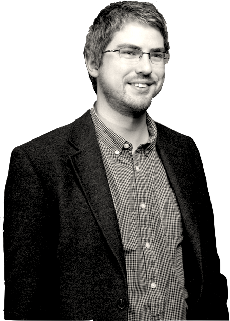

PhD, MMath, PGCTHEA, FHEA
Senior lecturer in Engineering Mathematics
|  |
I grew up in Northern Ireland, originally in the countryside of County Down where I attended the very small Drumaghlis Primary School that, sadly, no longer exists. When I was about 11 years old, we moved to the suburbs of Newtownabbey which is a few miles to the north of Belfast, and I enrolled at Belfast Royal Academy in the city centre. Although this was initially a very challenging change, I remain grateful for the friends I made there and the wise and gracious example set by the teaching staff. My undergraduate studies took place at the University of St Andrews in Scotland from 2010-2014. This consisted of a fairly balanced mixture of pure and applied mathematics, focusing on real and abstract analysis, measure theory and fractal geometry from the pure division, and a mixture of dynamical systems, scientific programming and solar magnetohydrodynamics on the applied side. My senior honours project was supervised by Prof Lars Olsen, and concerned uniform distribution of sequences. In 2012, I was also the treasurer of the St Andrews University Christian Union. Following a short break from studies, I undertook my doctorate in the School of Computing at Ulster University under the supervision of Dr Mark McCartney and Dr David Glass. This consisted of modelling and simulation of complex ecological systems, particularly eco-evolutionary models of the emergence of communities and meta-communities of species. The outcomes from these investigations can be found on my publications page. Shortly before defending my thesis in 2018 (in one of life's minor pleasures, I was officially awarded a doctorate on my 27th birthday), I was appointed to a lectureship at Sheffield Hallam University in Sheffield, England. My role in engineering mathematics is primarily to train undergraduates on our various engineering degree pathways (particularly Railway Engineering) in the requisite mathematical, statistical and computational techniques that such disciplines require. During the first two years of this appointment, I completed a PGCTHE and consequently attained Fellowship of the Higher Education Academy, and following my second year in the role (and profession) I was one of twenty-two members of staff across the university to receive an Inspirational Teaching Award on the basis of nomination by my students. As we are all well-aware, the nature of education changed drastically in March 2020, and in the autumn of that year I recorded close to 200 short videos for lecture series in undergraduate engineering mathematics. I continue to conduct research around the modelling and simulation of population dynamics on complex networks, and for the year 2021-22 was selected to be one of the university's Early Career Research and Innovation Fellows. I was progressed to a Senior Lecturer position in the summer of 2021. In addition to my university profile, I can be found on LinkedIn, ORCiD and ResearchGate. You can also see what I have been working on recently on my current research page. |
| 2021-present | Senior Lecturer in Engineering Mathematics, Sheffield Hallam University | 2018-2021 | Lecturer in Engineering Mathematics, Sheffield Hallam University |
| Sheffield Hallam University | Postgraduate Certificate Teaching in Higher Education (PGCTHE) |
| Ulster University | Doctor of Philosophy (PhD) |
| University of St Andrews | Master in Mathematics (MMath), First Class Honours |
| Belfast Royal Academy | A-levels (A* grade): Mathematics, Further Mathematics, Physics, Biology, Chemistry |
Sheffield Hallam University
Ulster University
University of St Andrews
All Ireland Scholarship Scheme
Belfast Royal AcademyIn some subjects, I received the highest marks in the Northern Irish exam boards.
|
|
|
Most of my previous research has been conducted using Fortran 90, and I frequently use (and occasionally teach the use of) MATLAB, particularly for visualisation. However I am in the process of fully retraining in Python, which I intend as the primary language for my future work. All of my course materials and journal submissions are prepared using LaTeX. |